Case study 02 · Mobile Usability Redesign
Eezy Receipt: from a drag-only MVP to a split anyone can finish
After a group shopping trip, someone has to read the receipt, figure out who had what, add tax, and then chase everyone to pay. Eezy Receipt scans the receipt, lets each person claim their own items from their phone, and tracks who has paid.
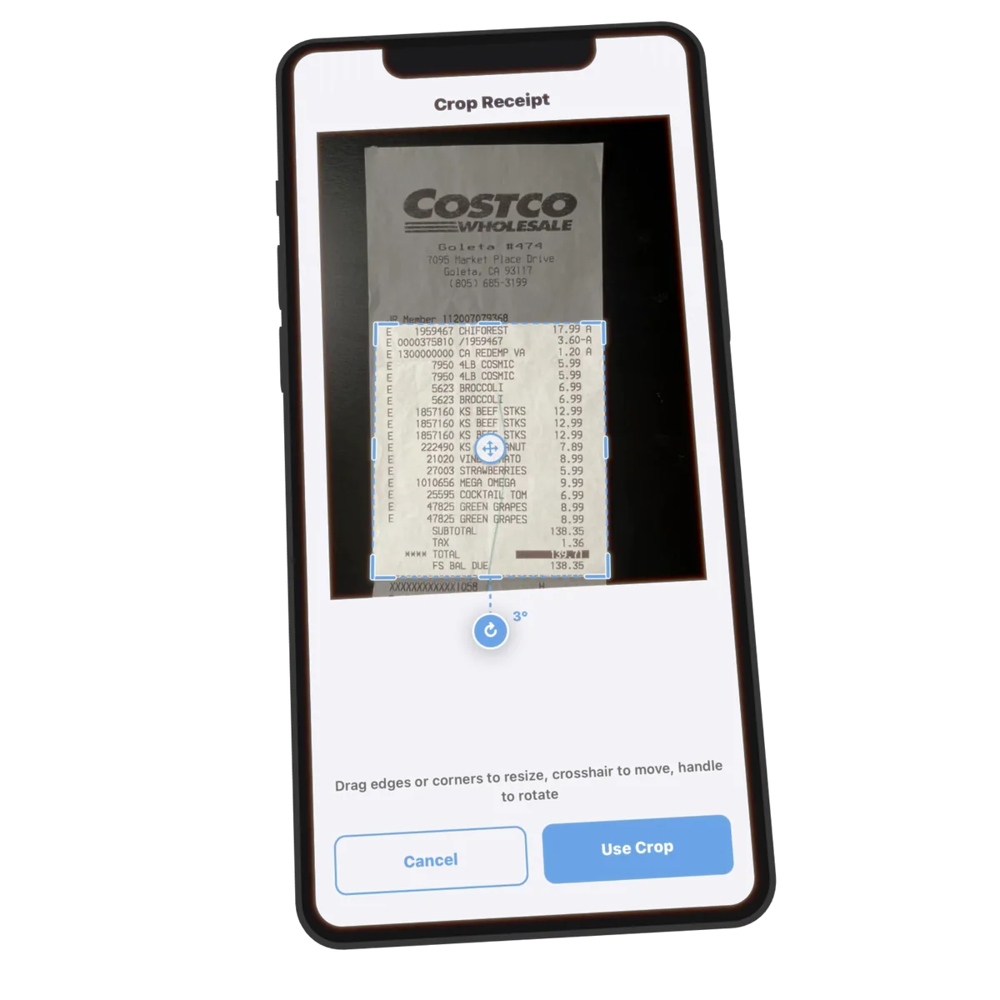
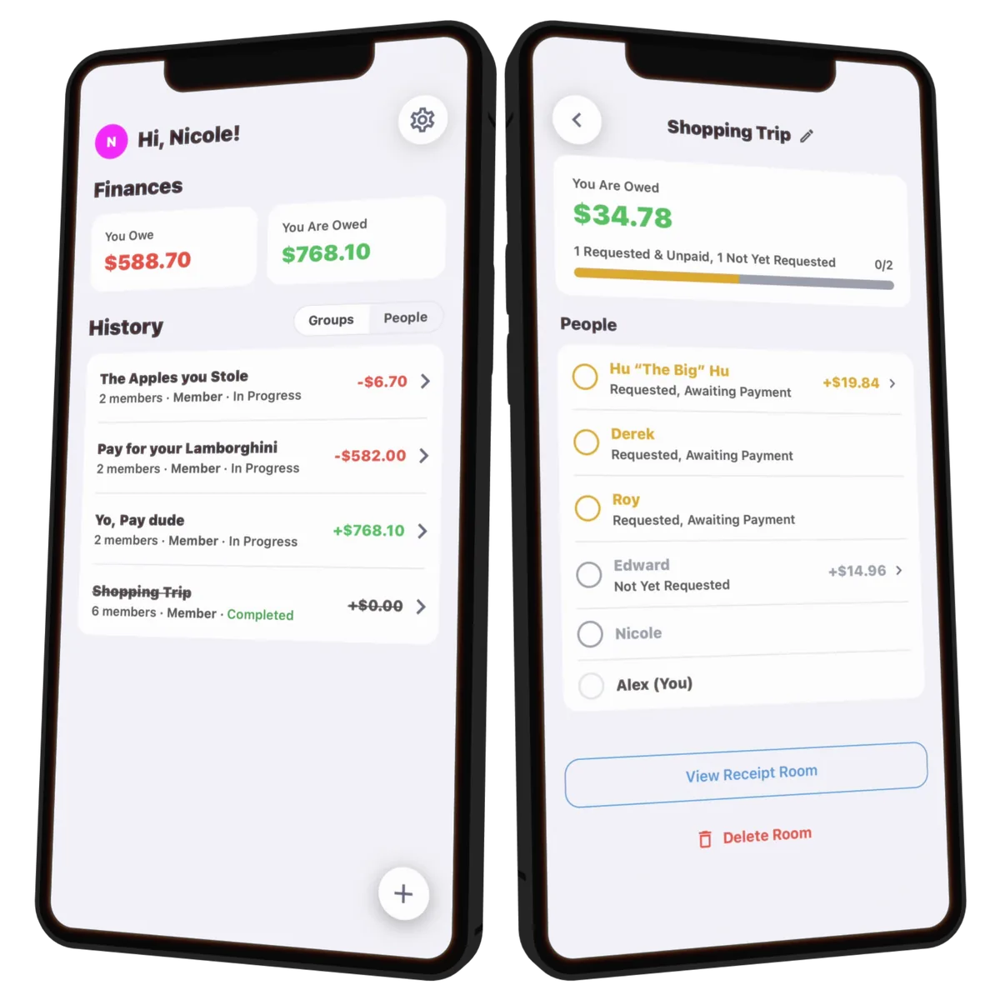
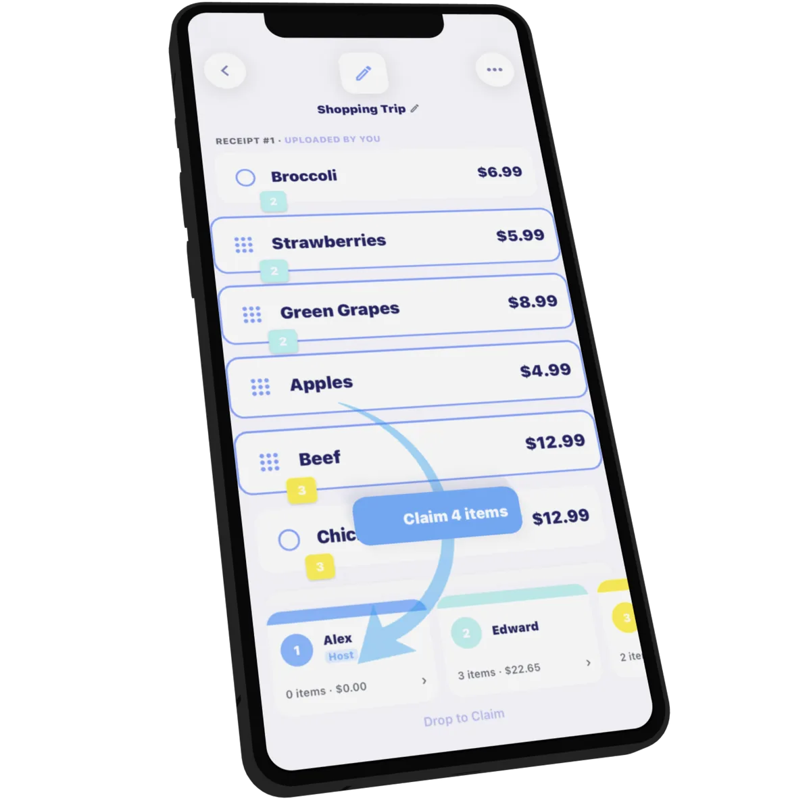
One receipt, mobile and web
I built interface components in TypeScript with React Native and Expo, using Tailwind CSS and NativeWind for styling. The web experience used React and Vite and was deployed with Vercel. Supabase handled authentication and SQL-backed data.
For receipt scanning, I integrated Google Cloud Vision for OCR and the OpenAI API for item parsing. I also built a deterministic parser that flags arithmetic mismatches instead of quietly returning a bad split. Our seven-person team used Git and GitHub to collaborate, with GitHub Actions running frontend checks on pull requests; I worked in VS Code.
Sketch the whole journey first
There are two kinds of users: the host, who paid and uploads the receipt, and everyone else, who just wants to claim their items and see what they owe. Before opening Figma I sketched rough wireframes of the core screens, then mapped both journeys end to end in a user flow diagram.
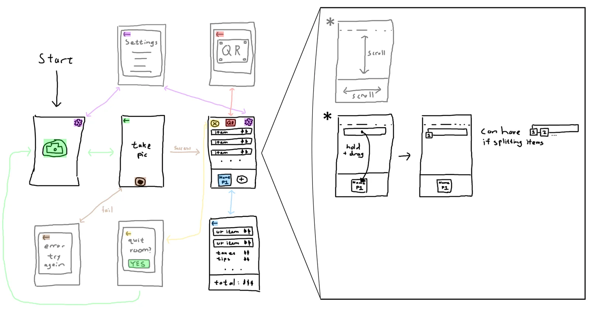
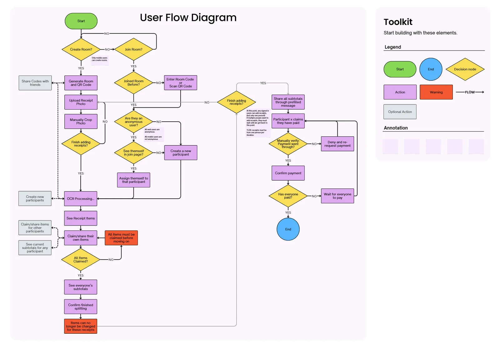
Version one: drag items into baskets
The first version was mobile-only and kept things minimal. It scanned the receipt, listed the items, and let one person drag each item onto a colored user box at the bottom of the screen. It proved that scanning plus claiming could work. It also looked and felt like a prototype.
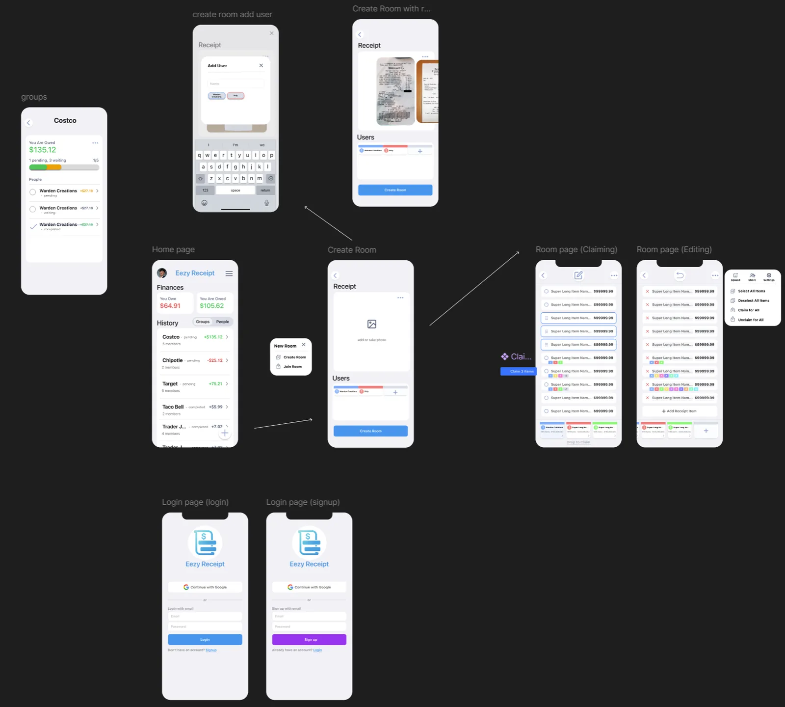
What testers told us
We sent v2.0.0 to testers with a short survey, and our professor reviewed the app the same week. The results pointed to one problem: people didn't know how to claim an item.
All three were lower than we wanted: most testers were confused, and nobody was confident they could finish a split alone.
"I did not know I was supposed to drag items to the people."
"The drag items to assign to people feature can be confusing to users who think it's a click and drop."
"I might have a hard time discovering how to assign people to items and where to check how much I owe."
Our professor's review found the same problem from another angle. Editing and assigning happened on the same screen, so you couldn't tell whether an item's details were final or still being changed. The review also asked for a walkthrough for first-time users.
Why this mattered: drag-and-drop felt natural to us because we built it. For a new user it was invisible, since nothing on screen said "drag me" or showed where to drop.
Two changes that made claiming obvious
1. Tap to select, then "Claim N items." Now you tap the items you had, and a "Claim 4 items" button appears right above the user boxes, pointing at where the items will go. Dragging onto a user box still works as a shortcut, so fast users keep the gesture.
2. Separate Assign and Edit modes. Fixing an OCR mistake and claiming an item are now two separate modes. In Assign mode the item details are locked, so you know they're final. In Edit mode nothing can be claimed.
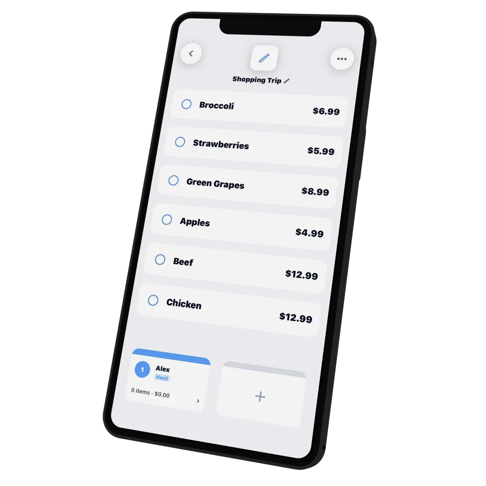
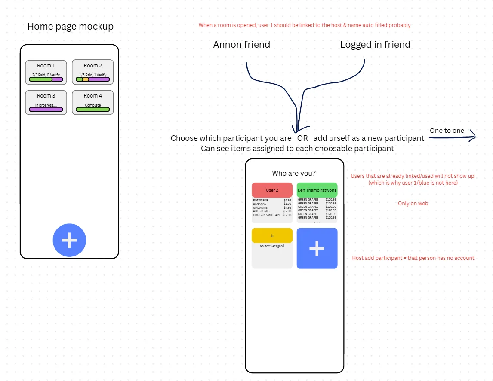
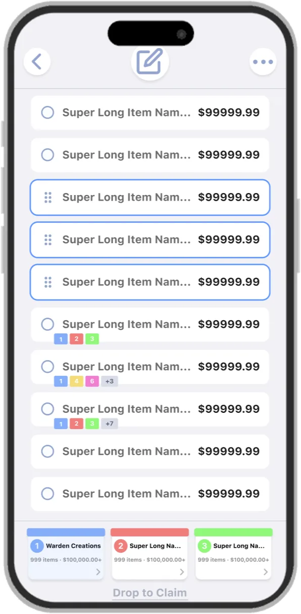
Money that doesn't depend on color
Showing what you owe in red and what you're owed in green is the obvious choice, but red-green color blindness is common. Every amount also carries a + or − sign and a plain label, "You Owe" or "You Are Owed," so it reads correctly without color.
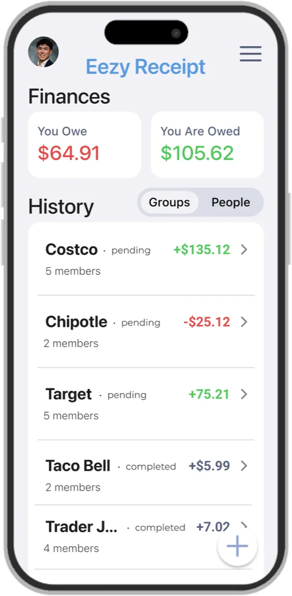
One design system, two platforms, two themes
I built the shared component library and the light and dark themes that the mobile and web apps both use. Colors are defined as named tokens: surfaces, borders, payment status (pending, waiting, completed), and positive or negative amounts. A screen never hard-codes a color, so both themes stay consistent everywhere.
Logo
The logo started as a sketch of a long, curling receipt. The first digital round folded it into a stack of lines with a dollar sign. For the final mark I simplified it to two bars, so it still reads at app-icon size, and switched to the app's blue.
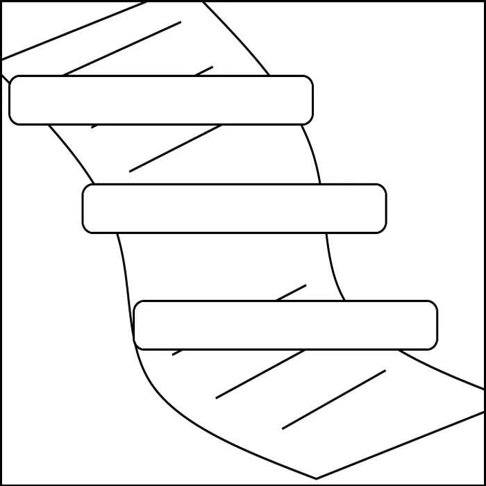
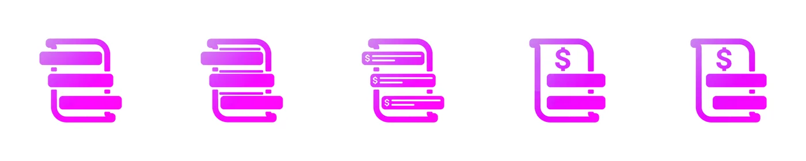
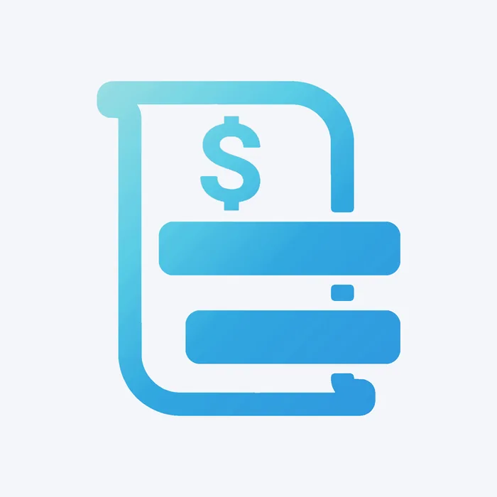
What I learned
- Test discoverability before building the interaction. A five-minute test with a paper sketch would have caught the drag problem weeks before we coded it.
- Give every gesture a visible alternative. Dragging is fast once you know it exists. A button that says what it does is how people find out.
- Close the loop. We shipped the redesign but ran out of quarter before surveying testers again. Next time I'd schedule the second round of testing before the deadline, not after.